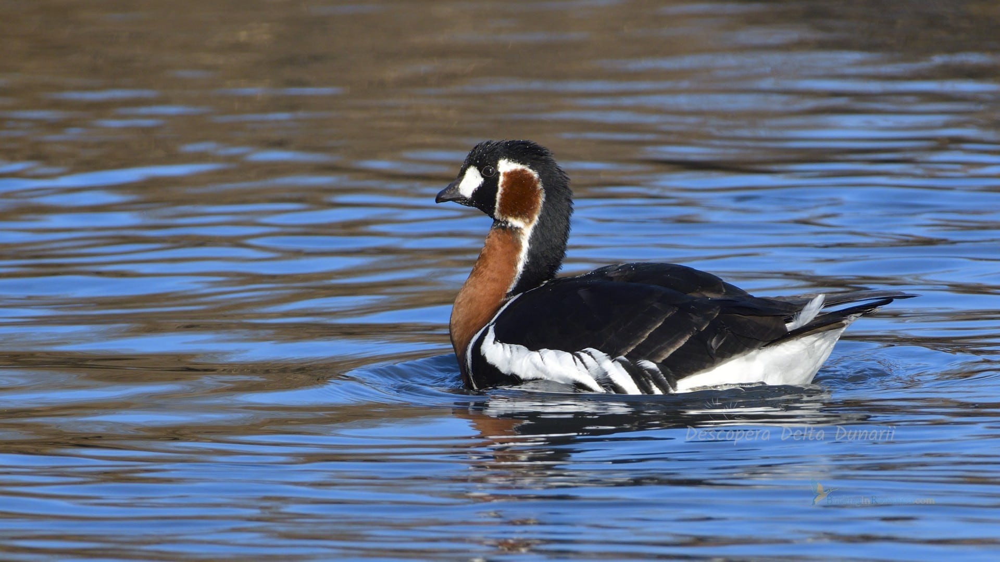

Descriere
Delta s-a format de-a lungul a 10 000 de ani şi continuă să crească încă şi astăzi, fiind considerată cel mai tânăr pământ românesc. Este cea mai bine conservată deltă din Europa, iar din anul 1990 este parte a Patrimoniului Mondial UNESCO, fiind considerată rezervaţie a biosferei. Este un labirint de lacuri şi canale, ce şerpuiesc prin cea mai mare suprafaţă compactă de stuf din lume şi este una dintre zonele cu cea mai mare biodiversitate de pe planetă. Se poate spune că prin diversitatea impresionantă a habitatelor şi a formelor de viaţă pe care le găzduieşte într-un spaţiu relativ restrâns, Delta Dunării constituie un adevărat muzeu al biodiversităţii, o bancă de gene naturală de valoare inestimabilă pentru patrimoniul natural universal. Alături de numărul mare de plante acvatice şi terestre se întâlnesc aici şi coloniile de pelicani şi cormorani atât de specifice Deltei Dunării precum şi un număr mare de alte păsări acvatice care trăiesc sau vin aici pentru a cuibări sau ierna. Se remarcă de asemenea şi numărul mare de specii de peşti cu valoare ecologică dar şi economică ridicată. Un loc aparte în flora Deltei îl ocupă Pădurea Letea, una dintre cele mai vechi rezervaţii naturale din România şi cea mai nordică pădure subtropicală din lume. Peisajul de aici este unul deosebit, unde pâlcurile de pădure alternează cu dunele de nisip, formate cândva pe fundul mării.
Un ținut exotic, unde se pot vedea peste 1830 de specii de copaci si plante, peste 2440 de specii de insecte, 91 de specii de moluste,11 specii de reptile, 10 specii de amfibieni, 341 de specii de pasari și 44 de specii de mamifere, foarte multe dintre acestea fiind declarate specii unice si monumente ale naturii. Si sa nu uitam ca in apele sale traiesc 133 de specii de pesti, ce constituie o sursa importanta de hrana pentru pasari si mamifere acvatice precum si o importanta resursa stiintifica si economica. Cu siguranță cel mai mare spectacol oferit de Deltă este cel dat de păsări, nu mai puțin de 331 de specii. Dintre acestea aproximativ 130 sunt migratoare. Pe lângă păsările mai cunoscute și mai comune care pot fi regăsite aici (diferite specii de rațe și gâște, stârci, egrete, lebede, cormorani, pescăruși și alte păsări specifice zonelor umede), în Deltă se întâlnesc și specii mai rare și mai puțin prezente în alte zone din România, cum ar fi țigănușul, lopătarul, ciocântorsul, piciorongul, alături de specii mai rare de gâscă cum ar fi gâsca cu gât roșu, specii rare de răpitoare sau cormoranul mic.
Gâsca cu gât roșu are un penaj deosebit fiind ușor de recunoscut. Gâtul de culoare roșu- cărămiziu contrastează cu spatele și aripilenegru intens și cu banda albă de pe flancuri. Prezintă gât scurt, gros și cap rotund cu ciocul scurt. Adulții prezintă pe aripi două benzi albe care se văd foarte bine când aripa e închisă, iar juvenilii au 4-5 benzi. Pata mare, roșie, înconjurată de alb de pe obrajii adulților, la juvenili devine mai mică și mult mai ștearsă. Este o specie caracteristică tundrei arctice Siberiene. Iernează în nord- vestul Mării Negre, în România, Bulgaria și Ucraina. În țara noastră se întâlnește pe lacurile din sud și sud-estul țării, începând cu luna octombrie și pâna în marție când se întorc în arealul de reproducere. Gâsca cu gât roșu este o specie vulnerabilă, iar populația globală este estimată la 44.000- 56.000 de exemplare. În România iernează între 9.000 și 20.000 de exemplare. Gâsca cu gât roșu nu cuibărește la noi în țară.